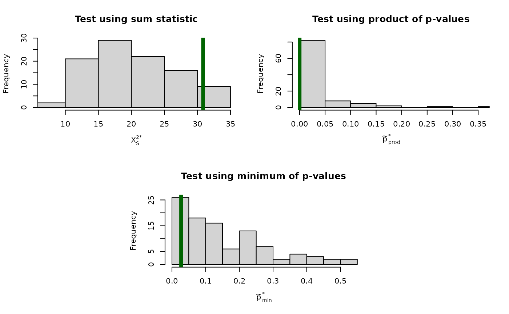

Test for Marginal Independence
MI.test.RdThe MI.test function offers three approaches for testing multiple
marginal independence (MMI) between one SRCV and one MRCV, or simultaneous
pairwise marginal independence (SPMI) between two MRCVs.
Usage
MI.test(
data,
I,
J,
type = "all",
B = 1999,
B.max = B,
summary.data = FALSE,
add.constant = 0.5,
plot.hist = FALSE,
print.status = TRUE
)Arguments
- data
For
summary.data = FALSE: a data frame containing the raw data where rows correspond to the individual item response vectors, and columns correspond to the items, W1, ..., WI and Y1, ..., YJ (in this order).For
summary.data = TRUE: a data frame containing 4 columns generically namedW,Y,yj, andcount(one MRCV case), or 5 columns namedW,Y,wi,yj, andcount(two MRCV case).- I
The number of items corresponding to row variable W. I = 1 for the one MRCV case.
- J
The number of items corresponding to column variable Y.
- type
A character string specifying one of the following approaches for testing for MI:
"boot"specifies a nonparametric bootstrap procedure;"rs2"specifies a Rao-Scott second-order adjustment;"bon"specifies a Bonferroni adjustment;"all"specifies all three approaches.- B
The desired number of bootstrap resamples.
- B.max
The maximum number of bootstrap resamples. A resample is thrown out if at least one of the J (one MRCV case) or IxJ (two MRCV case) contingency tables does not have the correct dimension;
MI.testuses the firstBvalid resamples or all valid resamples if that number is less thanB.- summary.data
A logical value indicating whether
datais a summary file containing the item response data instead of the raw data. Onlytype = "bon"is available forsummary.data = TRUE.- add.constant
A positive constant to be added to all zero marginal cell counts.
- plot.hist
A logical value indicating whether plots of the emprical bootstrap sampling distributions should be provided.
- print.status
A logical value indicating whether bootstrap progress updates should be provided.
Value
— MI.test returns a list containing at least
general, a list containing the following objects:
data: The original data frame supplied to thedataargument.I: The original value supplied to theIargument.J: The original value supplied to theJargument.summary.data: The original value supplied to thesummary.dataargument.X.sq.S: The modified Pearson statistic; NA if at least one of the J (one MRCV case) or IxJ (two MRCV case) contingency tables does not have the correct dimension.X.sq.S.ij: A matrix containing the individual Pearson statistics.
— For type = "boot", the primary list additionally includes
boot, a list containing the following objects:
B.use: The number of bootstrap resamples used.B.discard: The number of bootstrap resamples discarded due to having at least one contingency table with incorrect dimension.p.value.boot: The bootstrap p-value for the test of MMI or SPMI.p.combo.min.boot: The bootstrap p-value for the minimum p-value combination method.p.combo.prod.boot: The bootstrap p-value for the product p-value combination method.X.sq.S.star: A numeric vector containing the modified Pearson statistics calculated for each resample.X.sq.S.ij.star: A matrix containing the individual Pearson statistics calculated for each resample.p.combo.min.star: A numeric vector containing the minimum p-value calculated for each resample.p.combo.prod.star: A numeric vector containing the product p-value calculated for each resample.
— For type = "rs2", the primary list additionally includes
rs2, a list containing the following objects:
X.sq.S.rs2: The Rao-Scott second-order adjusted Pearson statistic.df.rs2: The degrees of freedom for testing the second-order Rao-Scott adjusted Pearson statistic.p.value.rs2: The p-value based on the Rao-Scott second-order adjustment.
— For type = "bon", the primary list additionally includes
bon, a list containing the following objects:
p.value.bon: The Bonferroni adjusted p-value for the test of MMI or SPMI.X.sq.S.ij.p.bon: A matrix containing the Bonferroni adjusted p-values for the individual Pearson statistics.
— For type = "all", the list includes all of the above objects.
— MI.stat returns a list containing the following objects:
X.sq.S: Defined above.X.sq.S.ij: Defined above.valid.margins: The number of contingency tables with correct dimension.
Details
The MI.test function calls MI.stat to calculate a modified
Pearson statistic (see Bilder, Loughin, and Nettleton (2000) and Bilder and
Loughin (2004)), and then performs the testing of MMI or SPMI. Three sets
of testing methods are implemented:
The nonparametric bootstrap resamples under the null hypothesis by independently sampling the W and Y vectors with replacement from the observed data. Fixed row counts (i.e., fixed counts for each level of the SRCV) are maintained for the one MRCV case. A modified Pearson statistic is calculated for each resample. In addition, bootstrap p-value combination methods are available to take advantage of the modified Pearson statistic's decomposition into J (one MRCV case) or IxJ (two MRCV case) individual Pearson statistics. The minimum or the product of p-values is the combination for each resample.
The Rao-Scott approach applies a second-order adjustment to the modified Pearson statistic and its sampling distribution. Formulas are provided in Appendix A of Bilder, Loughin, and Nettleton (2000) and Bilder and Loughin (2004). Note that this test can be conservative at times.
The Bonferroni adjustment multiplies each p-value (using a standard chi-square approximation) from the individual Pearson statistics by J (one MRCV case) or IxJ (two MRCV case). If a resulting p-value is greater than 1 after the multiplication, it is set to a value of 1. The overall p-value for the test then is the minimum of these adjusted p-values. Note that the Bonferroni adjustment tends to produce an overly conservative test when the number of individual Pearson statistics is large.
Agresti and Liu (1999) discuss a marginal logit model approach that uses generalized estimation equations (GEE) to test for MMI. As shown in the example given below, this approach can be performed via functions available from the geepack package. However, Bilder, Loughin, and Nettleton (2000) caution that the Wald test produced by this approach does not hold the correct size, particularly when the sample size is not large and marginal probabilities are small.
References
Agresti, A. and Liu, I.-M. (1999) Modeling a categorical variable allowing arbitrarily many category choices. Biometrics, 55, 936–943.
Bilder, C. and Loughin, T. (2004) Testing for marginal independence between two categorical variables with multiple responses. Biometrics, 36, 433–451.
Bilder, C., Loughin, T., and Nettleton, D. (2000) Multiple marginal independence testing for pick any/c variables. Communications in Statistics–Theory and Methods, 29, 1285–1316.
See also
The genloglin function offers a generalized loglinear
modeling approach for testing the relationship among two or three MRCVs.
Examples
# Test for MMI using the second-order Rao-Scott adjustment
test.mmi.rs2 <- MI.test(data = farmer1, I = 1, J = 5, type = "rs2")
test.mmi.rs2
#> Test for Multiple Marginal Independence (MMI)
#>
#> Unadjusted Pearson Chi-Square Tests for Independence:
#> X^2_S = 30.84
#> X^2_S.ij =
#> Y1 Y2 Y3 Y4 Y5
#> 5.96 7.89 4.62 1.42 10.95
#>
#> Second-Order Rao-Scott Adjusted Results:
#> X^2_S.adj = 28.68
#> df.adj = 18.6
#> p.adj = 0.0632
#>
# Test for MMI using all three approaches
# A small B is used for demonstration purposes; normally, a larger B should be used
test.mmi.all <- MI.test(
data = farmer1, I = 1, J = 5, type = "all", B = 99,
plot.hist = TRUE
)
#> Bootstrap Progress:
#>
|
| | 0%
|
|= | 1%
|
|= | 2%
|
|== | 3%
|
|=== | 4%
|
|==== | 5%
|
|==== | 6%
|
|===== | 7%
|
|====== | 8%
|
|====== | 9%
|
|======= | 10%
|
|======== | 11%
|
|======== | 12%
|
|========= | 13%
|
|========== | 14%
|
|=========== | 15%
|
|=========== | 16%
|
|============ | 17%
|
|============= | 18%
|
|============= | 19%
|
|============== | 20%
|
|=============== | 21%
|
|================ | 22%
|
|================ | 23%
|
|================= | 24%
|
|================== | 25%
|
|================== | 26%
|
|=================== | 27%
|
|==================== | 28%
|
|===================== | 29%
|
|===================== | 30%
|
|====================== | 31%
|
|======================= | 32%
|
|======================= | 33%
|
|======================== | 34%
|
|========================= | 35%
|
|========================= | 36%
|
|========================== | 37%
|
|=========================== | 38%
|
|============================ | 39%
|
|============================ | 40%
|
|============================= | 41%
|
|============================== | 42%
|
|============================== | 43%
|
|=============================== | 44%
|
|================================ | 45%
|
|================================= | 46%
|
|================================= | 47%
|
|================================== | 48%
|
|=================================== | 49%
|
|=================================== | 51%
|
|==================================== | 52%
|
|===================================== | 53%
|
|===================================== | 54%
|
|====================================== | 55%
|
|======================================= | 56%
|
|======================================== | 57%
|
|======================================== | 58%
|
|========================================= | 59%
|
|========================================== | 60%
|
|========================================== | 61%
|
|=========================================== | 62%
|
|============================================ | 63%
|
|============================================= | 64%
|
|============================================= | 65%
|
|============================================== | 66%
|
|=============================================== | 67%
|
|=============================================== | 68%
|
|================================================ | 69%
|
|================================================= | 70%
|
|================================================= | 71%
|
|================================================== | 72%
|
|=================================================== | 73%
|
|==================================================== | 74%
|
|==================================================== | 75%
|
|===================================================== | 76%
|
|====================================================== | 77%
|
|====================================================== | 78%
|
|======================================================= | 79%
|
|======================================================== | 80%
|
|========================================================= | 81%
|
|========================================================= | 82%
|
|========================================================== | 83%
|
|=========================================================== | 84%
|
|=========================================================== | 85%
|
|============================================================ | 86%
|
|============================================================= | 87%
|
|============================================================== | 88%
|
|============================================================== | 89%
|
|=============================================================== | 90%
|
|================================================================ | 91%
|
|================================================================ | 92%
|
|================================================================= | 93%
|
|================================================================== | 94%
|
|================================================================== | 95%
|
|=================================================================== | 96%
|
|==================================================================== | 97%
|
|===================================================================== | 98%
|
|===================================================================== | 99%
|
|======================================================================| 100%

test.mmi.all
#> Test for Multiple Marginal Independence (MMI)
#>
#> Unadjusted Pearson Chi-Square Tests for Independence:
#> X^2_S = 30.84
#> X^2_S.ij =
#> Y1 Y2 Y3 Y4 Y5
#> 5.96 7.89 4.62 1.42 10.95
#>
#> Bootstrap Results:
#> Final results based on 99 resamples
#> p.boot = 0.0606
#> p.combo.prod = 0.0505
#> p.combo.min = 0.202
#>
#> Second-Order Rao-Scott Adjusted Results:
#> X^2_S.adj = 28.68
#> df.adj = 18.6
#> p.adj = 0.0632
#>
#> Bonferroni Adjusted Results:
#> p.adj = 0.1357
#> p.ij.adj =
#> Y1 Y2 Y3 Y4 Y5
#> 1.0000 0.4778 1.0000 1.0000 0.1357
#>
# Use MI.test() with summary data
# Convert raw data file to summary file for this example
farmer1.irdframe <- item.response.table(
data = farmer1, I = 1, J = 5, create.dataframe =
TRUE
)
# Test for MMI using the Bonferroni adjustment
test.mmi.bon <- MI.test(
data = farmer1.irdframe, I = 1, J = 5, type = "bon",
summary.data = TRUE
)
test.mmi.bon
#> Test for Multiple Marginal Independence (MMI)
#>
#> Unadjusted Pearson Chi-Square Tests for Independence:
#> X^2_S = 30.84
#> X^2_S.ij =
#> Y1 Y2 Y3 Y4 Y5
#> 5.96 7.89 4.62 1.42 10.95
#>
#> Bonferroni Adjusted Results:
#> p.adj = 0.1357
#> p.ij.adj =
#> Y1 Y2 Y3 Y4 Y5
#> 1.0000 0.4778 1.0000 1.0000 0.1357
#>
# Test for SPMI using the second-order Rao-Scott adjustment
test.spmi.rs2 <- MI.test(data = farmer2, I = 3, J = 4, type = "rs2")
test.spmi.rs2
#> Test for Simultaneous Pairwise Marginal Independence (SPMI)
#>
#> Unadjusted Pearson Chi-Square Tests for Independence:
#> X^2_S = 64.03
#> X^2_S.ij =
#> y1 y2 y3 y4
#> w1 4.93 2.93 14.29 0.01
#> w2 6.56 2.11 11.68 0.13
#> w3 13.98 0.00 7.08 0.32
#>
#> Second-Order Rao-Scott Adjusted Results:
#> X^2_S.adj = 36.17
#> df.adj = 6.78
#> p.adj < 0.0001
#>
# Test for MMI using the marginal logit model approach
library(geepack)
n <- nrow(farmer1)
farmer1.id <- cbind(case = 1:n, farmer1)
# Reshape raw data into long format as required by geeglm() function
# Assumes 3:ncol(farmer1.id) corresponds to MRCV items
farmer1.gee <- reshape(
data = farmer1.id,
varying = names(farmer1.id)[3:ncol(farmer1.id)],
v.names = "response", timevar = "item", idvar = "case",
direction = "long"
)
row.names(farmer1.gee) <- NULL
farmer1.gee[, 2:3] <- lapply(farmer1.gee[, 2:3], factor)
# Data frame must be ordered by case
farmer1.gee <- farmer1.gee[order(farmer1.gee$case), ]
head(farmer1.gee)
#> case Ed item response
#> 1 1 1 1 0
#> 263 1 1 2 0
#> 525 1 1 3 0
#> 787 1 1 4 0
#> 1049 1 1 5 1
#> 2 2 4 1 0
tail(farmer1.gee)
#> case Ed item response
#> 1309 261 3 5 0
#> 262 262 1 1 0
#> 524 262 1 2 1
#> 786 262 1 3 1
#> 1048 262 1 4 1
#> 1310 262 1 5 1
mod.fit.H0 <- geeglm(
formula = response ~ item, family = binomial(link = logit),
data = farmer1.gee, na.action = na.omit, id = case,
corstr = "unstructured"
)
mod.fit.HA <- geeglm(
formula = response ~ Ed * item, family = binomial(link = logit),
data = farmer1.gee, na.action = na.omit, id = case,
corstr = "unstructured"
)
# Compute Wald test
anova(mod.fit.HA, mod.fit.H0)
#> Analysis of 'Wald statistic' Table
#>
#> Model 1 response ~ Ed * item
#> Model 2 response ~ item
#> Df X2 P(>|Chi|)
#> 1 20 33.183 0.03221 *
#> ---
#> Signif. codes: 0 ‘***’ 0.001 ‘**’ 0.01 ‘*’ 0.05 ‘.’ 0.1 ‘ ’ 1